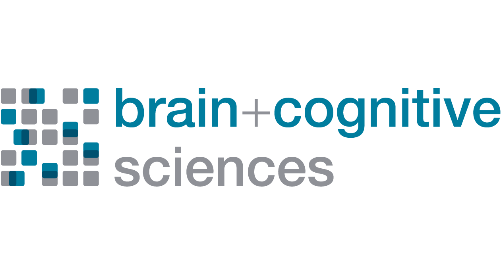

Hello! I am a senior at Hunter College double majoring
in computer science and math.
My professional interests are, broadly speaking: ML and AI research,
scientific computing, scientific software development,
and neuro-AI. There are other things I am into,
like physics, math, algorithms, philosophy, literature, lifting weights,
classical drawing, sculpture, and painting.
Research
Summer 2026: MIT — Fiete Lab

I investigated modular neural networks at the
Fiete Lab
in the Department of Brain and Cognitive Sciences,
under the mentorship of Daoyuan Qian, as part of the MIT
Summer Research Program in Biology and Neuroscience
(MSRP-Bio).
Building on previous work, I researched which kinds of training data are
effective at inducing modularity in regularized neural networks.
I used Python to generate data with varying levels of randomness and different statistical
properties and to analyze the internal structure and connectivity of networks I trained
with PyTorch. We found that certain geometric structures in the training data, as well as
some types of information-theoretic measures of dependence, are linked to the
emergence of modular structure in neural networks.
I presented my findings in a poster session at MIT and gave a talk about this project.
Please see my poster, presentation, code, and Daoyuan's original paper
in the following links:
Summer 2025: Iowa State University
I worked on machine learning approaches in computational chemistry
as part of the
SIMCODES NSF REU
with Mengdi Huai and Peng Xu, under the supervision of principal
investigators Ryan Richard and Theresa Windus.
We used machine learning to try to improve equations used in the
Effective Fragment Potential method
in computational quantum chemistry
for calculating interaction energies between molecules. In particular, we were interested
in finding damping functions (used for correcting short-range interaction behavior) that were
parameter-free, interpretable, and possibly more accurate than existing ones.
I used PyTorch to train neural networks and PySR to build a symbolic regression pipeline
to search for new equations. My work resulted in some
candidate equations, which I evaluated for accuracy and mathematical suitability,
as well as directions for future work.
Here is a poster, presentation, and code related to this project:
Projects
I am currently working on some personal projects, which will be
posted here soon.